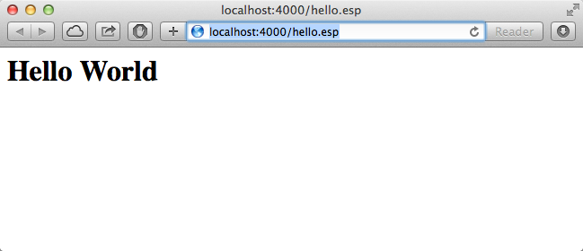
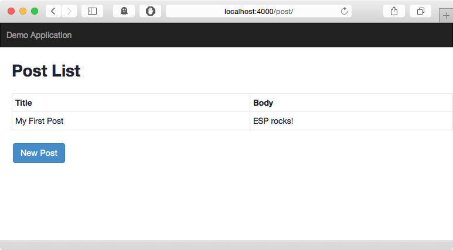

This quick tour of the ESP Web Framework provides an overview of ESP and how to use it to create ESP pages and ESP applications. Before you start, make sure you have read the Quick Start and that you have ESP installed on your system so you can try the commands as you go.
The ESP web framework includes a utility program called esp that is used to serve your application but it can also be used to install extension packages, generate scaffolds, and otherwise manage your application.
To run esp, create a directory to contain your ESP application and then from that directory, run esp. In this example, we create a directory called "test".
$ mkdir test $ cd test $ esp esp: 2: Started HTTP service on "127.0.0.1:4000" esp: 1: Started at Mon Apr 14 15:00:42 2014 PDT
ESP is now running and ready to serve documents from the "test" directory.
For help on the esp utility, type:
man esp # or esp -help
The first step in any tour is to create a simple "Hello World" web page. ESP web pages have an ".esp" extension. Create a file called hello.esp using your favorite text editor in the test directory with the following content:
<html> <body> <h1>Hello World</h1> </body>
To view the "Hello" web page, type the following URL: http://localhost:4000/hello.esp into your browser.
While that was fun, the output is static and boring, so let's add some dynamic content. You can embed "C" language code and ESP function calls by including them inside a special ESP web page directive that will be executed and converted to HTML before being sent to the client. There are a variety of server-side ESP web page directives, the one you'll use first, is:
<%= expression %>.
To add the current date and time, modify the hello.esp web page and add the highlighted line:
<h1>Hello Bright World</h1> <h2>Generated on <%= mprGetDate(0); %></h2>
Now when you re-run the page, it will display the current date and time. If you refresh the page by pressing reload, the new date and time will be displayed.

Notice that you did not have to restart the web server, nor did you have to manually recompile the ESP code. Rather, ESP transparently recompiled the web page in the background. ESP noticed that the hello.esp web page had been modified and it re-parsed and compiled it into a loadable module ready for execution. The loaded module is cached in-memory and on-disk for fast execution by subsequent requests.
In the output from the esp command, you may have noticed:
esp: 2: GET /hello.esp HTTP/1.1 esp: 2: esp: compile hello.esp esp: 2: Loading native module view_d2f3bdb8df0a0f0b440ea83c81b618c5.dylib esp: 2: HTTP/1.1 200 OK
This output traces each request and response, but also notifies you that the page was recompiled. Any request or page syntax errors will be show in the esp log output.
You can also embed arbitrary C code in your ESP page, like:
<h3><% render("Request method is %s", getMethod()); %></h3>
<%
int i;
for (int i = 0; i < 10; i++) {
render(" Line: %d</br>\r\n", i);
}
%>
By using the ESP statement directive <% code %>, you can embed arbitrary "C" language statements in your web page. The render function allows you to write arbitrary data which is patched back where the directive was defined in the page. See the ESP Pages document for full details about all the ESP web page directives.
To create more complex ESP applications than a simple hello-world, we will typically want a bit more structure. The esp utility is a great aid to create a good structure for adding ESP pages, controllers and to quickly assemble pieces of an application.
In the test directory we created above, we can install ESP extensions packs via esp.
For example to install the ESP server-side MVC framework:
$ pak install esp-html-skeleton [Install] esp-server 5.3.0 [Install] esp-mvc 5.3.0 [Install] esp-html-skeleton 5.3.0
ESP provides MVC skeletons paks to get you started quickly. These skeletons provide the core structure of your application and include templates and scaffolds that are used to generate models, views and controllers as your application grows.
To use the esp-html-skeleton framework, type:
esp install esp-html-skeleton
This will install the esp-html-skeleton Pak, all dependent paks and create the necessary directories for your application to grow. It will create:
Once installed, you can generate other assets such as controllers, database tables, migrations and MVC scaffolds.
Using the Pak package manager, you can retrieve more extension packs from the online Pak Catalog. For example, to install jQuery:
$ pak install jquery
[Install] jquery 1.9.1
[Update] package.json
This will download the jQuery pak and save it in the local Pak cache (typically in ~/.paks). It will then be installed in your local application directory.
Your application will be automatically compiled by ESP as required, but you can pre-compile using the esp utility.
$ esp compile
[Parse] index.esp
[Compile] cache/view_fd3d62020d8ebee515b3a93388834acd.c
Scaffods are simple MVC components to Create-Read-Update-Delete (CRUD) database tables. ESP provides an easy mechansim to generate scaffolds that include:
For example, to create a blog "post" table and views:
$ esp generate scaffold post title:string body:text
This will generate:
Now run esp and navigate to in your browser to view a table of blog posts.
http://localhost:4000/post

If you want to host your application in Appweb, generate the required appweb.conf via:
esp generate appweb
This will generate a stand-alone appweb.conf that includes the required EspApp directive to define your application.
<EspApp name="test" routes="esp-restful">
That concludes a quick tour through some of the capabilities of the ESP web framework.
To learn more, please read:
You may also like to ask questions at the ESP Support Forum.